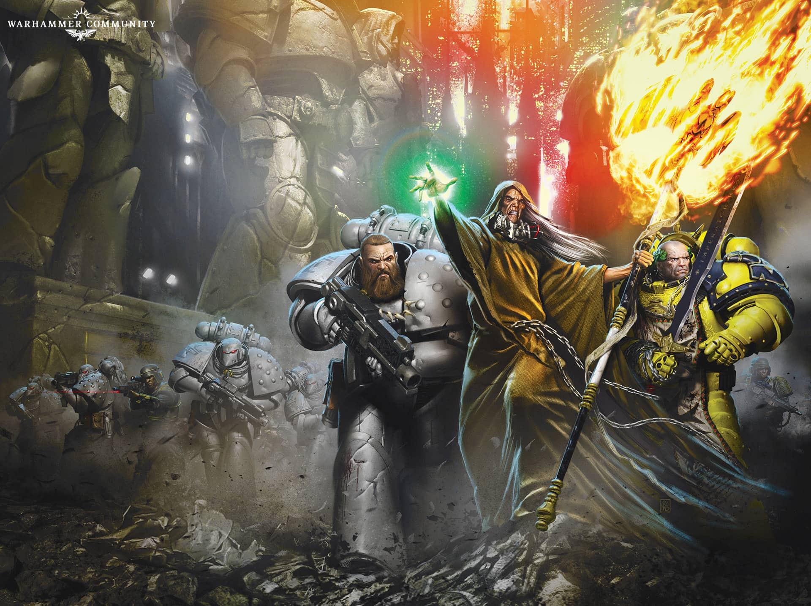

THE PURGE

Author: Anthony Reynolds
Format: Novella
As the Shadow Crusade spreads across Ultramar, Word Bearers commander Sor Talgron attacks the isolated world of Percepton Primus. The prolonged campaign leaves him questioning his place in Lorgar’s plans.
Listed in: The Silent War.
Introduction reviewed against Black Library’s description on 2026-09-27. The publisher page may contain spoilers.
Publication facts: publisher source, checked 2026-09-26.
Open this work in the interactive Archive to track reading progress and explore related works.
Take the three-question memory check for this work. The quiz contains story spoilers.